Home
Washington & State
3 min walk to stop 
Eastbound
60
Randolph/Harbor Dr
every 20 min
10 mins
124
Navy Pier
every 10 min
15 mins
Northbound
151
Devon/Clark
every 16 min
15 mins
Southbound
J14
103rd/Stony Island
every 15 min
20 mins
124
Navy Pier
every 10 min
30 mins
Reroute
6x
Jackson Park Express
Out of service
Resumes
4
Cottage Grove
12:10 am
20
Madison
12:10 am
157
Streeterville/Taylor
6 am